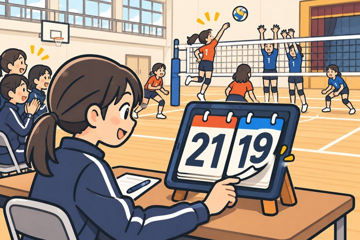

iPhone・iPad・Android 向け・体育館の得点板
1点ごとに、
めくれる得点板。
体育館のめくり式の得点板を、スマホと iPad に。押すたびに数字の札がめくれて、コートの向こうからも点数が分かります。バレーボール・バドミントン・卓球・ピックルボールのセットとサーブ権、バスケ・フットサルのタイマーまで、1台で数えて見せられます。
App Store・Google Play で見る（準備中）買い切りの有料アプリです。一度買えば、すべての機能が使えます。アカウント登録・アプリ内課金・サブスクリプション・広告はありません。ネットにつながっていなくても使えます。

こんな困りごとのために作りました
試合中に広告が出て焦る
広告はありません。試合のあいだ、画面は得点板だけです。画面も消えません。
リセットが無い・押しまちがえる
［取り消す］で直前の1点に戻せます（何回でも）。「セットを終える」「試合を終える」「点を0に戻す」を分けて置いています。
セットとサーブ権を数えまちがえる
種目のルールで、2点差・上限・サーブの交代・デュースのあとのサーブを数えます。セットの数とセットごとの点も、板に出ます。
コートチェンジができない
［コートチェンジ］で左右が板ごと入れかわります。バレーの最終セットの8点、卓球の最終ゲームの5点など、ルールの時には知らせます。
タイマーの音が小さい・ロスタイムが分からない
タイマーは全部入り。時間が来たら大きな音を3回鳴らし、画面を光らせます。サッカーは時間のあとも「+1:23」と数え続けます。
結果が残らない
終わった試合は、セットの点と点の流れまで記録に残ります。結果は画像で共有できます。
できること
| 種目 | バレーボール・ソフトバレー／ビーチボール（セットごとにサーブ権制とラリー制）・バドミントン・卓球・ピックルボール（ダブルスの3つの数）・バスケ（クォーター・チームファウル・タイムアウト）・フットサル・サッカー・ハンドボール・自由（0 より下も数えられる） |
|---|---|
| 得点板 | めくれる大きな数字・セットの数・サーブ権の印・セットごとの点・前後半の点と合計・上に時計 |
| 操作 | 左右を押して1点・下にスワイプで1点もどす・取り消す・コートチェンジ・セットを終える |
| タイマー | 前後半・クォーター・大きな音（選べる）・画面が光る・ロスタイム |
| 読み上げ | 「15対12」・セットポイント・マッチポイント（日本語・英語） |
| テレビに映す | AirPlay・HDMI（Android はキャスト・HDMI）で、操作の映らない得点板を 16:9 いっぱいに |
| そのほか | 記録と点の流れ・チームの名前と色・操作のロック・iPad と iPhone Duo では2チームを左右に |
くわしくは使い方とプライバシーポリシーへ。